Infinite Limits#
Discussion & Definitions#
It is possible that when x gets close to a the functional values of \(f(x)\) either increase without bound or decrease without bound. That is, the graph of the function goes straight up or straight down. These limits do not exist either but we denote them a little differently to give the reader more information about the behavior of the function close to the value a. These definitions are still intuitive but are sufficient for most casess.
Definition: Infinite Limits
Let \(f(x)\) be a function defined at all values in an open interval \((c, a)\) with \(c < a\). If the values of the function \(f(x)\) increase without bound as x approaches a, with \(x < a\), we say that the limit as x approaches a from the left is positive infinity. Symbolically we write,
Let \(f(x)\) be a function defined at all values in an open interval \((a, c)\) with \(c > a\). If the values of the function \(f(x)\) increase without bound as x approaches a, with \(x > a\), we say that the limit as x approaches a from the right is positive infinity. Symbolically we write,
Let \(f(x)\) be a function defined at all values in an open interval \((c, a)\) with \(c < a\). If the values of the function \(f(x)\) decrease without bound as x approaches a, with \(x < a\), we say that the limit as x approaches a from the left is negative infinity. Symbolically we write,
Let \(f(x)\) be a function defined at all values in an open interval \((a, c)\) with \(c > a\). If the values of the function \(f(x)\) decrease without bound as x approaches a, with \(x > a\), we say that the limit as x approaches a from the right is negative infinity. Symbolically we write,
Let \(f(x)\) be a function defined at all values in an open interval containing the number a, except for a itself. If the values of the function \(f(x)\) increase without bound as x approaches a from either side, we say that the limit as x approaches a is positive infinity. Symbolically we write,
Let \(f(x)\) be a function defined at all values in an open interval containing the number a, except for a itself. If the values of the function \(f(x)\) decrease without bound as x approaches a from either side, we say that the limit as x approaches a is negative infinity. Symbolically we write,
Positive infinity (\(\infty\)) and negative infinity (\(-\infty\)) are not real numbers. So in all the cases above, the limit does not exist. We write \(\lim_{x \to a} f(x) = \infty\) and \(\lim_{x \to a} f(x) = -\infty\) (instead of DNE) to indicate how the limit does not exist and subsequently give us more information about the behavior of the function.
Definition: Vertical Asymptote
Let \(f(x)\) be a function. If any of the following conditions hold, then the line \(x = a\) is a vertical asymptote of \(f(x)\).
where \(\pm\infty\) means either \(\infty\) or \(-\infty\).
Example: \(f(x) = \frac{1}{x}\)#
For this example we are interested in what is happening close to \(x = 0\).
Numeric Approach#
If we attack this numerically we can see that the functional values get very large (positively and negatively) as \(x \to 0\).
From the definitions above we would say,
Since the one-sided limits are “going to” different infinities we cannot use this notation for the two-sided limit, all we can write here is,
We would also say that \(f(x) = \frac{1}{x}\) has a vertical asymptote \(x = 0\), or that \(f(x) = \frac{1}{x}\) has a vertical asymptote at \(x = 0\).
Graphical Approach#
Graphing the function \(f(x) = \frac{1}{x}\) shows the same behavior as we saw with the numeric approach. As we approach 0 from the right the corresponding functional values get larger and larger, and as we approach 0 from the left the corresponding functional values get larger and larger negatively.
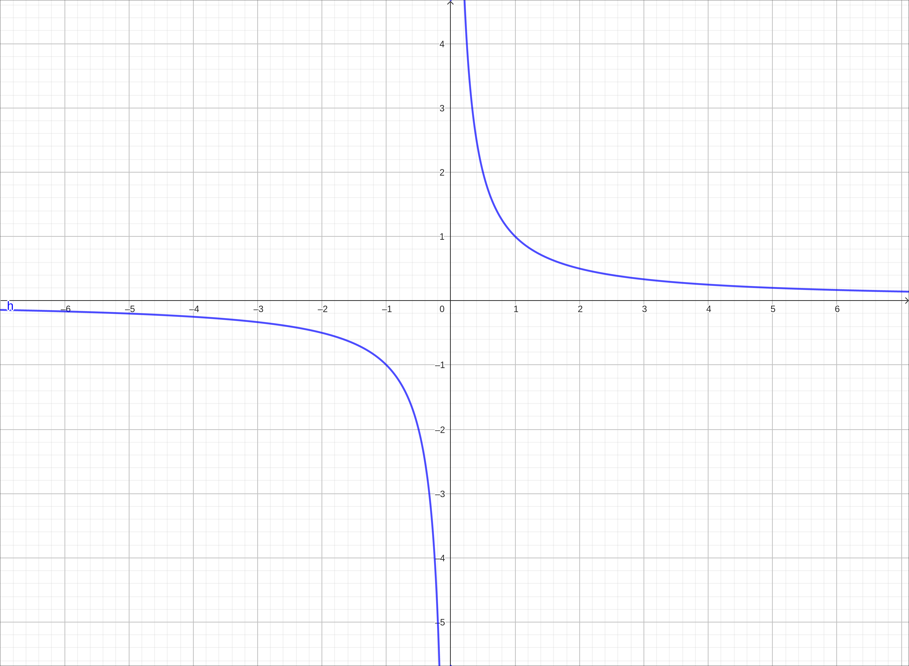
\(f(x) = \frac{1}{x}\)#
This gives us the same conclusions,
Since the one-sided limits are “going to” different infinities we cannot use this notation for the two-sided limit, all we can write here is,
We would also say that \(f(x) = \frac{1}{x}\) has a vertical asymptote \(x = 0\), or that \(f(x) = \frac{1}{x}\) has a vertical asymptote at \(x = 0\).
GeoGebra#
Numerical Approach#
Input the function, syntax is below, this should come into GeoGebra as
f(x)1/xOpen the spreadsheet tool,
Main Menu > View > Spreadsheet.Input the x values in the A column.
In the
B1cell inputf(A1). This will substitute theA1value into the function and evaluate it.Select
B1, copy it either with a right click and the popup menu or keyboard shortcut.Select
B2down to the last row of x values.Paste either with a right click and the popup menu or keyboard shortcut. This will evaluate the function at each of the values in column
A.
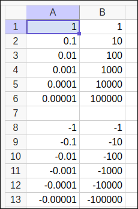
\(f(x) = \frac{1}{x}\)#
From the values we come to the conclusions,
Since the one-sided limits are “going to” different infinities we cannot use this notation for the two-sided limit, all we can write here is,
We would also say that \(f(x) = \frac{1}{x}\) has a vertical asymptote \(x = 0\), or that \(f(x) = \frac{1}{x}\) has a vertical asymptote at \(x = 0\).
Graphical Approach#
Input the function, syntax is below, this should come into GeoGebra as
f(x)1/xGeoGebra will automatically graph the function.
Using the Shift-Click and Drag on the axes and repositioning, zoom to a view that still contains \(x = 0\) and is nicely readable.
\(f(x) = \frac{1}{x}\)#
From the graph we come to the same conclusions,
Since the one-sided limits are “going to” different infinities we cannot use this notation for the two-sided limit, all we can write here is,
We would also say that \(f(x) = \frac{1}{x}\) has a vertical asymptote \(x = 0\), or that \(f(x) = \frac{1}{x}\) has a vertical asymptote at \(x = 0\).
Algebraic Approach#
Although we have not yet discussed limit laws and methods we can let the software do that work for us. GeoGebra has a built in computer algebra system that does exact mathematics.
Input the function, syntax is below, this should come into GeoGebra as
f(x)1/xIn the next input cell start typing
limit, after three characters or so an autocompletion menu will appear withLimitBelowas one of the options, select it, the parameters for this function are a function and a value, inputffor the function, hit tab, then input 0 for the value. The cell will display the limit command and the value of \(-\infty\). Hence,In the next input cell start typing
limit, after three characters or so an autocompletion menu will appear withLimitAboveas one of the options, select it, the parameters for this function are a function and a value, inputffor the function, hit tab, then input 0 for the value. The cell will display the limit command and the value of \(\infty\). Hence,
and
CLAE#
Numerical Approach#
Input the function, syntax is below, you can copy this and paste it into the CAS input bar with a right click popup menu or keyboard shortcut. Note that CLAE does not automatically assign function names to inputs.
f(x):=1/xClick the Spreadsheet tab.
Input the x values in the A column.
In the
B1cell inputf(A1). This will substituteA1into the function and evaluate it.Select
B1, copy its formula withEdit > Copy Formulasor the corresponding toolbar button.Select
B2down to the last row of x values.Paste with either
Edit > Pasteor the corresponding toolbar button.
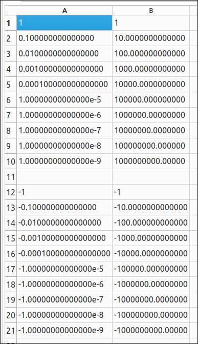
\(f(x) = \frac{1}{x}\)#
From the graph we come to the conclusions,
and
So there is a vertical asymptote to \(f(x) = \frac{1}{x}\) at \(x = 0\).
Graphical Approach#
Input the function, syntax is below, you can copy this and paste it into the CAS input bar with a right click popup menu or keyboard shortcut. Note that CLAE does not automatically assign function names to inputs.
f(x):=1/xClick the 2-D Graphs tab.
Click and drag the expression from the CAS workspace to the graph, or graphics manager. This will plot the function. Use the right-click and drag on the axes and repositioning, zoom to a view that still contains \(x = 0\) and is nicely readable.
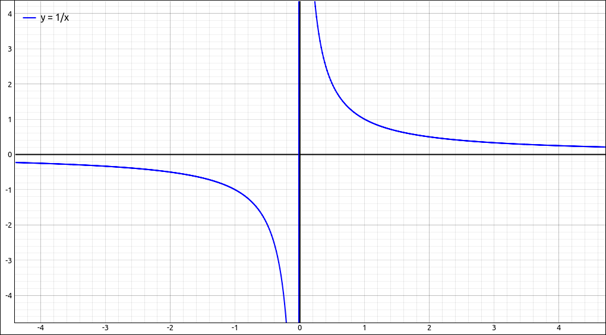
\(f(x) = \frac{1}{x}\)#
From the graph we come to the same conclusions,
and
So there is a vertical asymptote to \(f(x) = \frac{1}{x}\) at \(x = 0\).
Algebraic Approach#
Although we have not yet discussed limit laws and methods we can let the software do that work for us. CLAE has a built in computer algebra system that does exact mathematics.
Input the function, syntax is below. Note we do not need the
f(x)here but it will work equally well if we include it.1/x- Select the expression and then select
Calculus > Limit, a dialog box will appear, here are the settings. Variable:
x.Limit Point: 0.
Direction: Left
Leave the variable properties as they are.
Select OK
- Select the expression and then select
The CAS workspace will show the limit in the description and \(-\infty\) as the value.
- Select the expression and then select
Calculus > Limit, a dialog box will appear, here are the settings. Variable:
x.Limit Point: 0.
Direction: Right
Leave the variable properties as they are.
Select OK
- Select the expression and then select
The CAS workspace will show the limit in the description and \(\infty\) as the value.
Hence we would conclude,
and
So there is a vertical asymptote to \(f(x) = \frac{1}{x}\) at \(x = 0\).
Maxima#
Numerical Approach#
Creating tables in Maxima is not the easiest thing to do and requires a little programming. You can simply evaluate the function at each x value one at a time to obtain the same information or try using a Maxima for loop.
Clear any variable names you are using.
kill(f,x)Input the function, syntax is below,
f(x):=1/xNow either evaluate
f(0.1),f(0.01),f(0.001), and so on or do the following loop.(print("x", "f"), for i:1 thru 10 do (x: 1.0/(10^i), L: f(x)*1.0, print(x,L)) );
x f 0.1 10.0 0.01 100.0 0.001 1000.0 1.0*10^-4 10000.0 1.0*10^-5 100000.0 9.999999999999999*10^-7 1000000.0 1.0*10^-7 10000000.0 1.0*10^-8 1.0*10^8 1.0*10^-9 9.999999999999999*10^8 1.0*10^-10 1.0*10^10
Now either evaluate
f(-0.1),f(-0.01),f(-0.001), and so on or do the following loop.(print("x", "f"), for i:1 thru 10 do (x: -1.0/(10^i), L: f(x)*1.0, print(x,L)) );
x f -0.1 -10.0 -0.01 -100.0 -0.001 -1000.0 -1.0*10^-4 -10000.0 -1.0*10^-5 -100000.0 -9.999999999999999*10^-7 -1000000.0 -1.0*10^-7 -10000000.0 -1.0*10^-8 -1.0*10^8 -1.0*10^-9 -9.999999999999999*10^8 -1.0*10^-10 -1.0*10^10
Hence we would conclude,
and
So there is a vertical asymptote to \(f(x) = \frac{1}{x}\) at \(x = 0\).
Graphical Approach#
Clear any variable names you are using.
kill(f,x)Input the function, syntax is below,
f(x):=1/x- Select
Plot > Plot 2D, a dialog box will appear, here are the settings. Expression:
f(x).Variable:
xfrom \(-5\) to 5.Variable:
yfrom \(-5\) to 5.Leave the rest of the options as they are.
Select OK
- Select
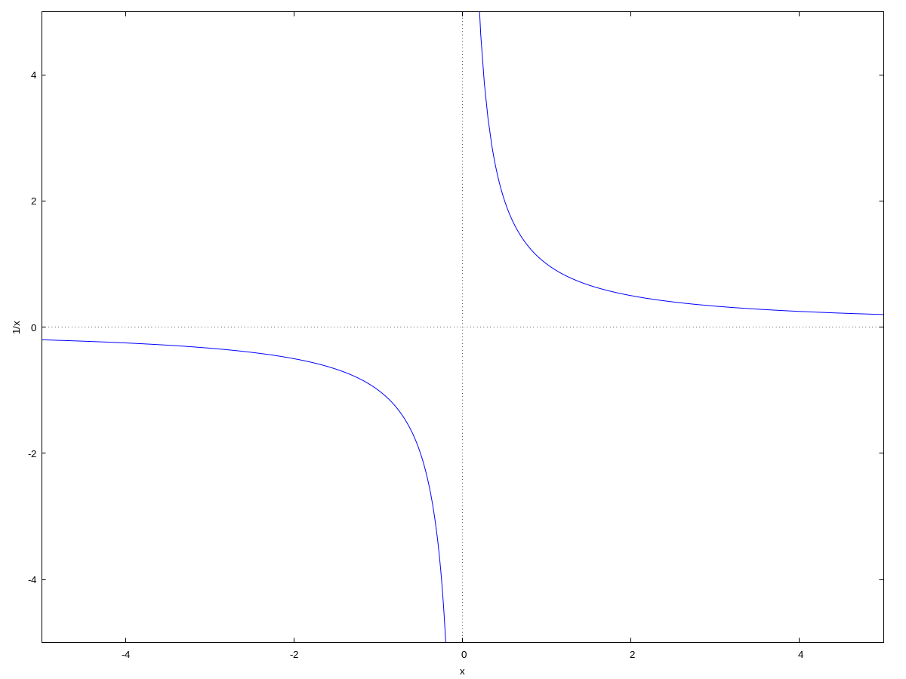
\(f(x) = \frac{1}{x}\)#
Hence we would conclude,
and
So there is a vertical asymptote to \(f(x) = \frac{1}{x}\) at \(x = 0\).
Note
If we did not specify a y range Maxima would select on for us, giving us the following image. Although it is still good enough to make our conclusions specifying the y range gives a much better plot.
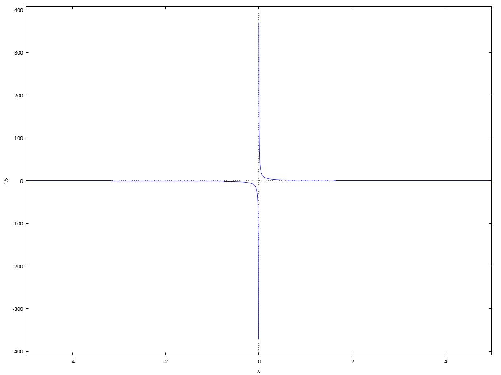
\(f(x) = \frac{1}{x}\)#
Algebraic Approach#
Clear any variable names you are using.
kill(f,x)Input the function, syntax is below,
f(x):=1/x- Select
Calculus > Find Limit, a dialog box will appear, here are the settings. Expression:
f(x).Variable:
xPoint: 0.
Direction: left
Leave the rest of the options as they are.
Select OK
- Select
The result will be \(-\infty\).
- Select
Calculus > Find Limit, a dialog box will appear, here are the settings. Expression:
f(x).Variable:
xPoint: 0.
Direction: right
Leave the rest of the options as they are.
Select OK
- Select
The result will be \(\infty\).
Hence we would conclude,
and
So there is a vertical asymptote to \(f(x) = \frac{1}{x}\) at \(x = 0\).
Example: \(f(x) = \frac{1}{x^2}\)#
For this example we are interested in what is happening close to \(x = 0\).
Numerical Approach#
Hence we would conclude,
and hence we can write,
So there is a vertical asymptote to \(f(x) = \frac{1}{x^2}\) at \(x = 0\).
Graphical Approach#
Plotting the function gives us the following image,
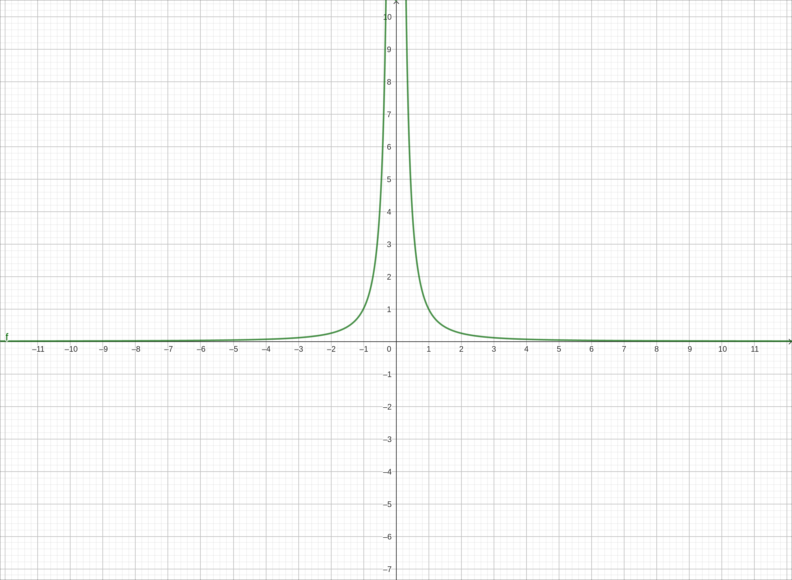
\(f(x) = \frac{1}{x^2}\)#
From the image it appears that as the x values get closer to 0 from either side the corresponding y values are increasing without bound. This would lead us to the same conclusion,
and hence we can write,
So there is a vertical asymptote to \(f(x) = \frac{1}{x^2}\) at \(x = 0\).
GeoGebra#
Input the function,
1/x^2Follow the process outlined in the first example to determine the one-sided limits of this function as \(x \to 0^-\) and \(x \to 0^+\). The spreadsheet should produce values close to the tables above, the image should look like the following, and the above and below limit commands should both produce \(\infty\). In fact, we can ask GeoGebra for the two-sided limit of this function as \(x \to 0\), it too will result in \(\infty\).
\(f(x) = \frac{1}{x^2}\)#
Each method should give us the conclusion,
and hence we can write,
So there is a vertical asymptote to \(f(x) = \frac{1}{x^2}\) at \(x = 0\).
CLAE#
Input the function,
f(x):=1/x^2Follow the process outlined in the first example to determine the one-sided limits of this function as \(x \to 0^-\) and \(x \to 0^+\). The spreadsheet should produce values close to the tables above, the image should look like the following, and the left and right limit commands should both produce \(\infty\). In fact, we can ask CLAE for the two-sided limit of this function as \(x \to 0\), it too will result in \(\infty\).
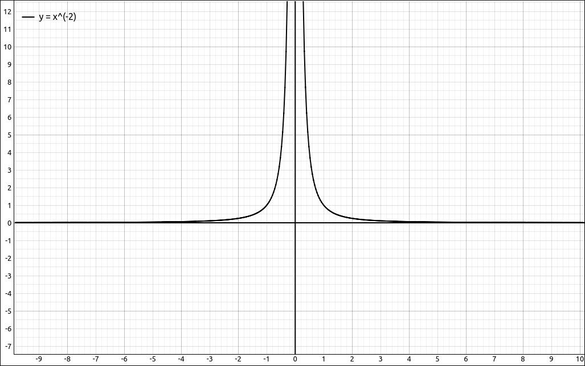
\(f(x) = \frac{1}{x^2}\)#
Each method should give us the conclusion,
and hence we can write,
So there is a vertical asymptote to \(f(x) = \frac{1}{x^2}\) at \(x = 0\).
Maxima#
Input the function,
f(x):=1/x^2Follow the process outlined in the first example to determine the one-sided limits of this function as \(x \to 0^-\) and \(x \to 0^+\). The spreadsheet should produce values close to the tables above, the image should look like the following, and the left and right limit commands should both produce \(\infty\). In fact, we can ask Maxima for the two-sided limit of this function as \(x \to 0\), it too will result in \(\infty\).
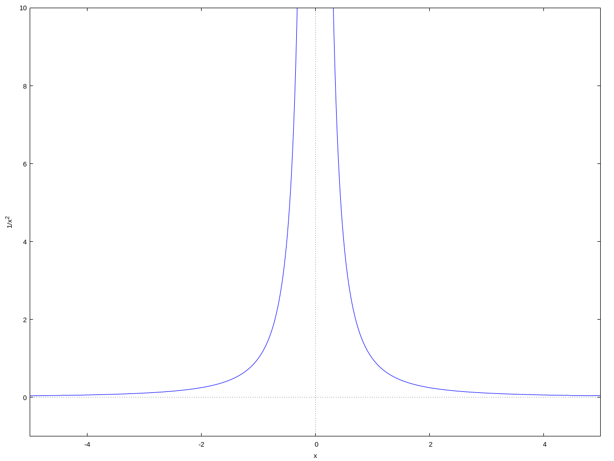
\(f(x) = \frac{1}{x^2}\)#
Each method should give us the conclusion,
and hence we can write,
So there is a vertical asymptote to \(f(x) = \frac{1}{x^2}\) at \(x = 0\).
Example: \(f(x) = \frac{1}{x^{2} + 2 x - 3}\)#
For this example we will simply look at a graphical approach. If we plot this function we get,
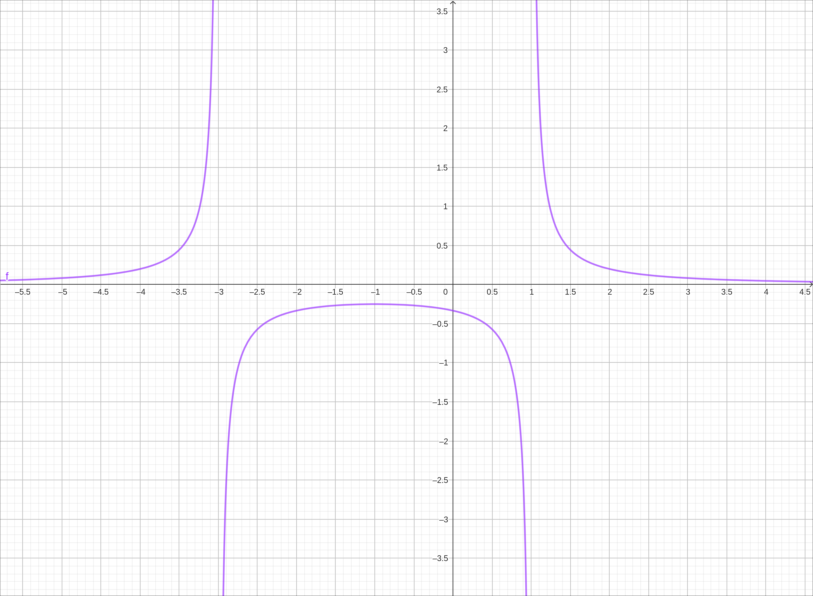
\(f(x) = \frac{1}{x^{2} + 2 x - 3}\)#
From the image it appears that we have two vertical asymptotes, one at \(x = -3\) and one at \(x = 1\). Also from the graph we can conclude the following,
GeoGebra#
To get this image in GeoGebra the syntax for the function is,
1/(x^2+2 x-3)
\(f(x) = \frac{1}{x^{2} + 2 x - 3}\)#
CLAE#
To get this image in CLAE the syntax for the function is,
1/(x^2 + 2*x - 3)
Note that we do not need the f(x):= definition since this was just to make the spreadsheet calculations easier.
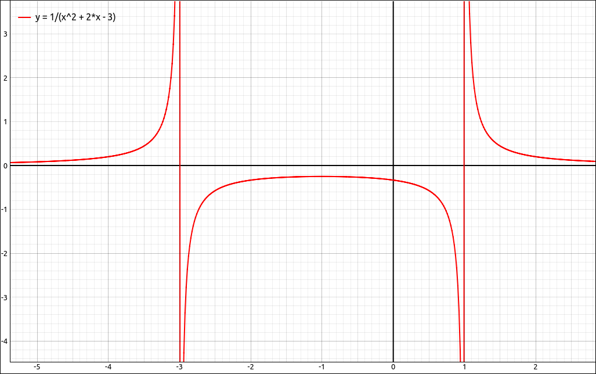
\(f(x) = \frac{1}{x^{2} + 2 x - 3}\)#
If we select the function in the CAS and then select Algebra > Factor the result is,
Since from this it is clear that the denominator is 0 at \(x = -3\) and \(x = 1\) we know something interesting is happening to the function at these points.
Note
Note that in this image the software graphs vertical lines at the two asymptotes. The asymptotes are not part of the graph only a property of the graph and hence function.
Maxima#
To get this image in Maxima the syntax for the function is,
f(x):=1/(x^2 + 2*x - 3)
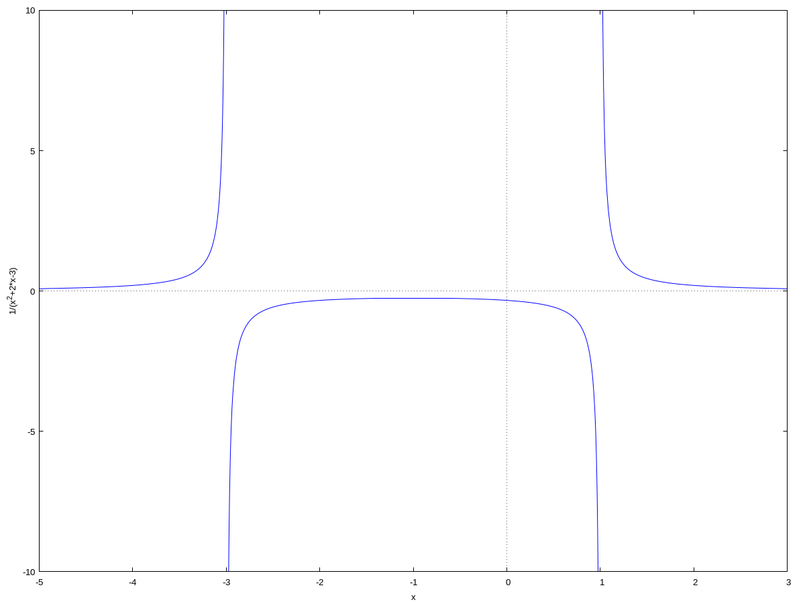
\(f(x) = \frac{1}{x^{2} + 2 x - 3}\)#
We can factor this expression in Maxima as well using the command factor(f(x)), which produces,
Since from this it is clear that the denominator is 0 at \(x = -3\) and \(x = 1\) we know something interesting is happening to the function at these points.
Example: Einstein’s Equation#
Einstein’s equation for the mass of a moving object is
where \(m_0\) is the object’s mass at rest, \(v\) is its speed, and \(c\) is the speed of light. From the equation it is clear that as v increases the denominator decreases and hence (if \(m_0 > 0\)) the mass of the object increases.
We will look at the situation of \(v \to c^-\) graphically and algebraically.
GeoGebra#
In GeoGebra the independent variable needs to be x and not v so we will use the expression,
m0/sqrt(1-x^2/c^2)
When you paste this into GeoGebra, it automatically creates sliders for m0 and c, with default values of 1. Although c is not 1 it is a constant so for our purposes 1 is fine. The image is,
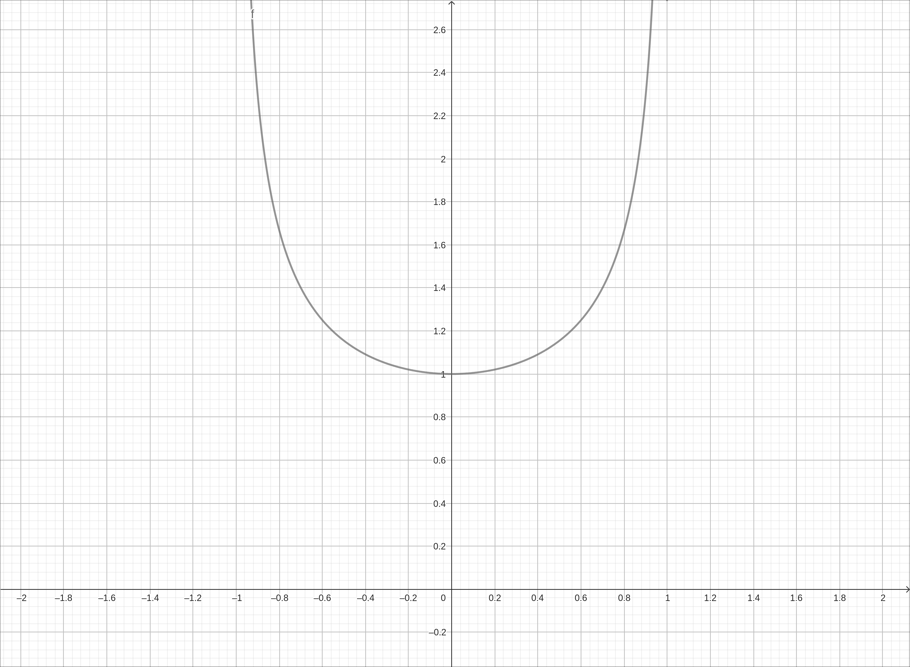
Einstein’s Equation#
From this we can see that
CLAE#
In CLAE the syntax for Einstein’s equation is,
m0/sqrt(1-v^2/c^2)
If we wish to graph this we first need to change the variable v to x. This can be done with Algebra > Evaluate, change the Variable to v and the Expression to x and hit OK. This will result in,
If we plot this CLAE will automatically create sliders for m0 and c, with default values of 1. Although c is not 1 it is a constant so for our purposes 1 is fine. The image is,
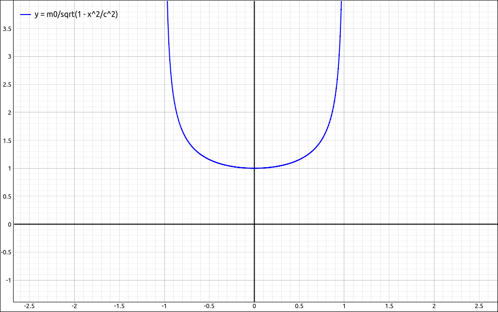
Einstein’s Equation#
From this we can see that
We can also attack this algebraically in CLAE. Select the first input
Then Calculus > Limit, use the variable v, limit point c, and a direction of Left. The result will be,
The sign function is simply a function that is 1 if the argument is positive, \(-1\) if the argument is negative, and 0 if the argument is 0. So the result depends on the values of \(m_0\) and \(c\). The computer algebra system in CLAE does not make any assumptions about the variables unless we tell it to. Since we know that both \(m_0\) and \(c\) are positive it is clear that this sign function is 1 and the result is \(\infty\). We could have told CLAE this in the limit calculation by doing the following.
Select the first input
Then Calculus > Limit, use the variable v, limit point c, and a direction of Left. Before we click OK, click on the button at the bottom, Edit Variable Properties. Another dialog box will appear with a list of variables on the left and a bunch of selections on the right. Click c and then select Positive, then select m0 and again select Positive. Click OK and the dialog will close taking you back to the first one and the types for c and m0 have changed. Now click OK and the CAS will display a result of \(\infty\).
Maxima#
In Maxima the syntax for Einstein’s equation is,
f(v):=m0/sqrt(1 - v^2/c^2)
Since m0 and c are constants and Maxima does not create sliders for constants in graphs, like GeoGebra and CLAE, we cannot graph this unless we substitute values for m0 and c. So if we let \(m_0 = 1\) and \(c = 4\) we get,
f(v):=1/sqrt(1 - v^2/4^2)
which we can graph. When you do make sure that the independent variable is v, let v go from 0 to 7 and y from 0 to 10.
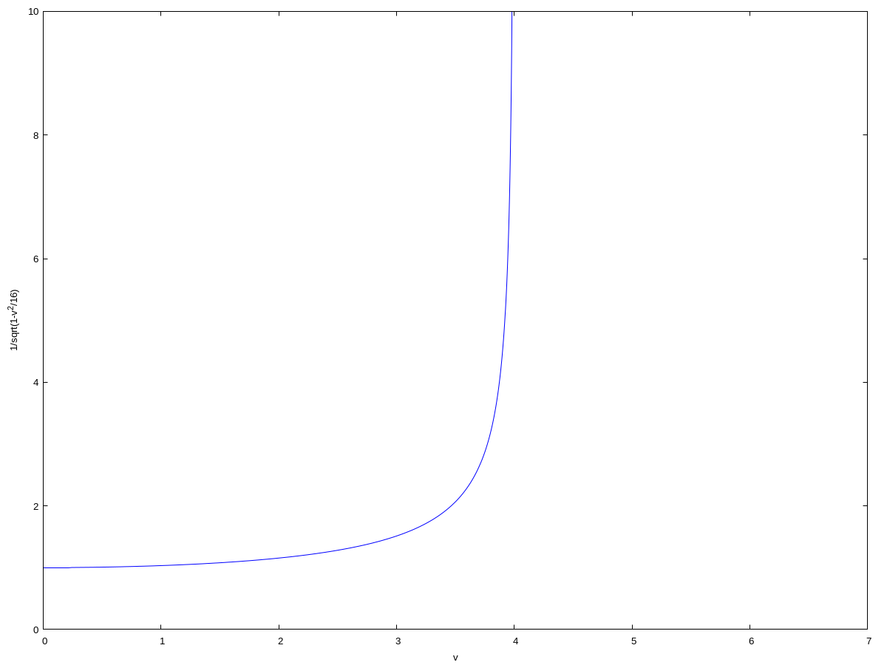
Einstein’s Equation#
Showing the infinite limit.
Example: \(f(x) = \ln(x)\)#
Thus far, all the vertical asymptotes were when the denominator of a function was 0. While this is frequent we can asymptotes to functions that are not fractions ot rational expressions. Furthermore we can have rational expressions where the denominator is 0 and not have a vertical asymptote there. For the first situation consider the function, \(f(x) = \ln(x)\). Again, we will concentrate on this graphically.
GeoGebra#
To graph this in GeoGebra we use the syntax,
ln(x)
which gives the image,
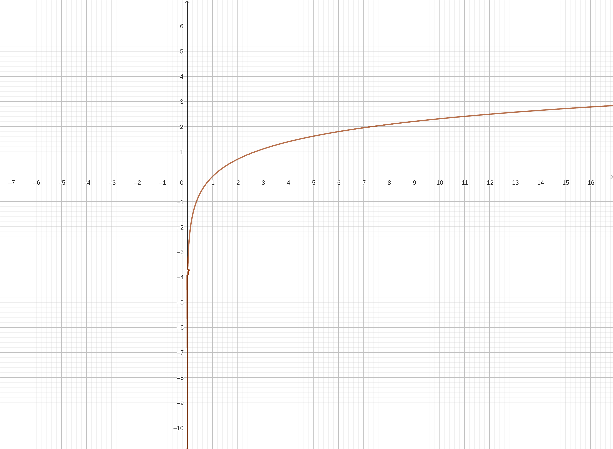
\(f(x) = \ln(x)\)#
From the graph it appears that,
and hence there is a vertical asymptote at \(x = 0\).
CLAE#
To graph this in CLAE we can use the syntax,
ln(x)
or
log(x)
In CLAE and several other computer algebra systems log(x) represents ln(x). Also note that the CAS workspace displays log(x). We get the image,
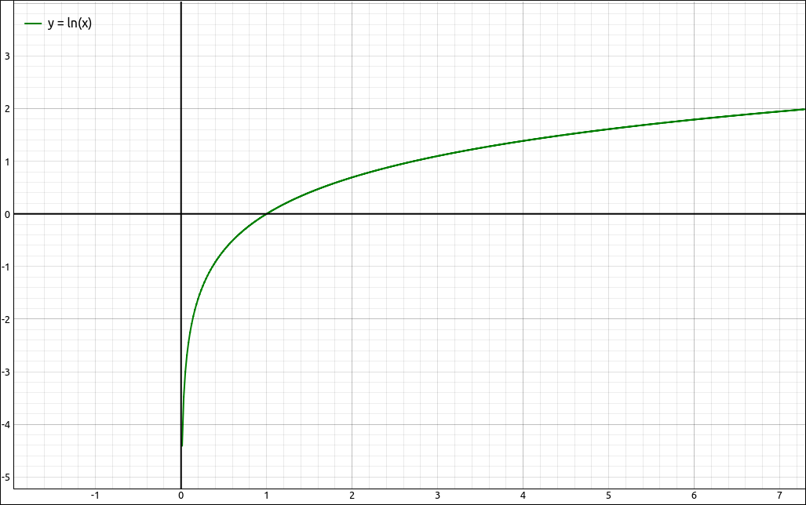
\(f(x) = \ln(x)\)#
From the graph it appears that,
and hence there is a vertical asymptote at \(x = 0\).
Maxima#
To graph this in CLAE we can use the syntax,
log(x)
In Maxima and several other computer algebra systems log(x) represents ln(x). We get the image,
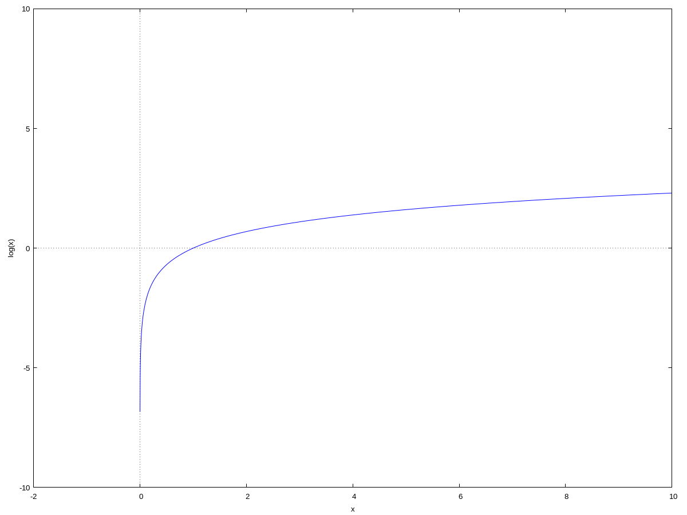
\(f(x) = \ln(x)\)#
From the graph it appears that,
and hence there is a vertical asymptote at \(x = 0\).
Example: \(f(x) = \frac{x^{2} + 2 x + 1}{x^{2} - 2 x - 3}\)#
We can have rational expressions where the denominator is 0 and not have a vertical asymptote there. Again, we will concentrate on this graphically. We will examine the function,
GeoGebra#
To graph this in GeoGebra we use the syntax,
(x^2 + 2 x + 1)/(x^2 - 2 x - 3)
which gives the image,
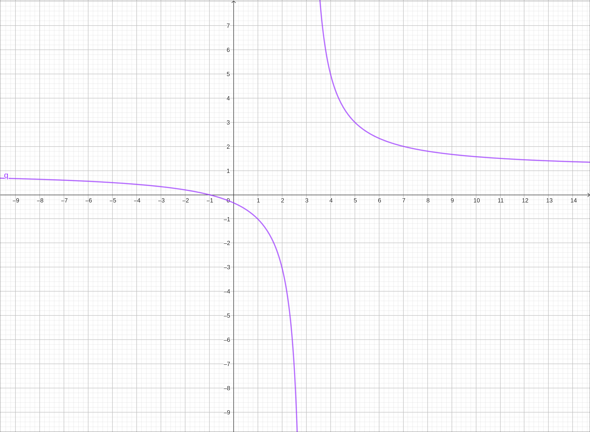
\(f(x) = \frac{x^{2} + 2 x + 1}{x^{2} - 2 x - 3}\)#
From the graph it appears that,
and hence there is a vertical asymptote at \(x = 3\). It also appears that there are no other vertical asymptotes, and there are not. It is easy to see that the denominator \(x^{2} - 2 x - 3 = \left(x - 3\right) \left(x + 1\right)\) and hence is zero at \(x = 3\) and \(x = -1\) but there is no vertical asymptote at \(x = -1\).
Although we can factor this denominator in our heads, if we could not here is how you can use GeoGebra to do so. Select a new cell, run the command Denominator(f), this will extract the denominator and plot it, you should see the following. GeoGebra will also give the denominator a function name, say it was g(x). Now select a new cell and run the command Factor(g) and it will be factored into \(\left(x - 3\right) \left(x + 1\right)\).
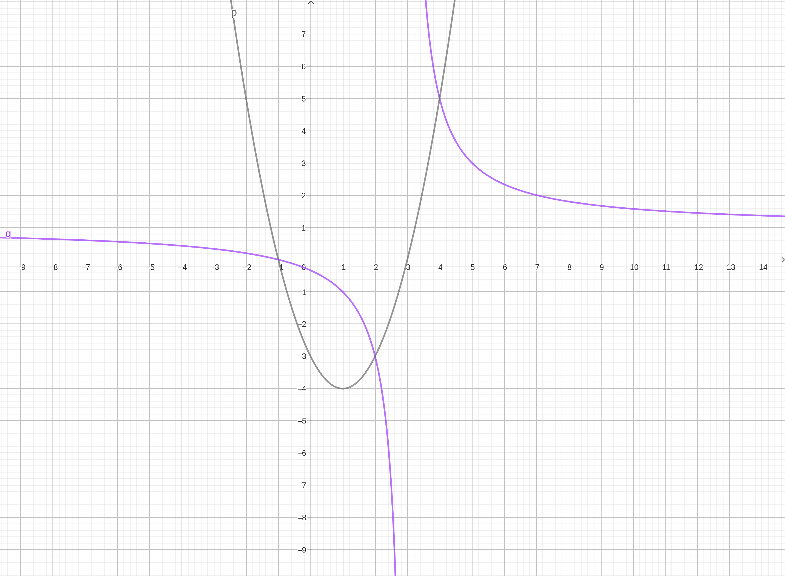
\(f(x) = \frac{x^{2} + 2 x + 1}{x^{2} - 2 x - 3}\) and \(y = x^{2} - 2 x - 3\)#
The reason that \(x = -1\) is not an asymptote is because there is no infinite limit at \(x = -1\), which is caused by the numerator also having \(x = -1\) as a root. If we select a new cell and run Simplify(f) we get,
which does not have a root of \(x = -1\) in the denominator.
Note
The original function
and its simplification
are not equal. For two functions to be equal they must be equal at all values of the variable. These two are except at \(x = -1\) since \(g(-1) = 0\) and \(f(-1)\) is undefined. In reality there is a hole in the graph of \(f(x)\) at \(x = -1\), like,
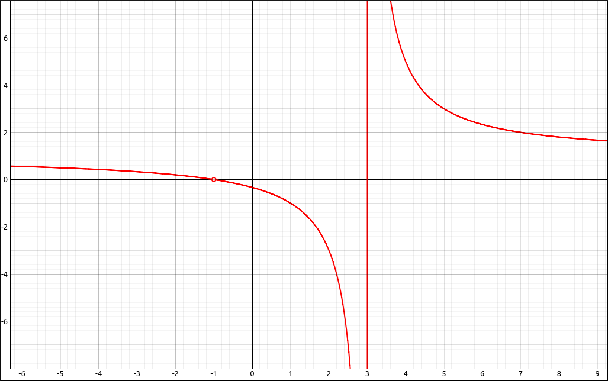
\(f(x) = \frac{x^{2} + 2 x + 1}{x^{2} - 2 x - 3}\)#
CLAE#
To graph this in CLAE we use the syntax,
(x^2 + 2*x + 1)/(x^2 - 2*x - 3)
which gives the image,
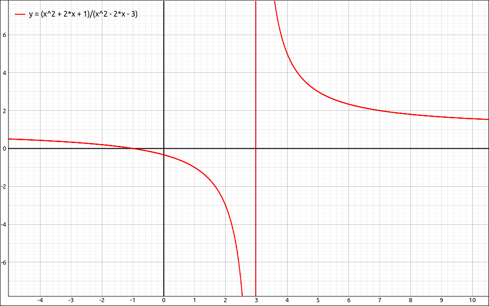
\(f(x) = \frac{x^{2} + 2 x + 1}{x^{2} - 2 x - 3}\)#
From the graph it appears that,
and hence there is a vertical asymptote at \(x = 3\). It also appears that there are no other vertical asymptotes, and there are not. It is easy to see that the denominator \(x^{2} - 2 x - 3 = \left(x - 3\right) \left(x + 1\right)\) and hence is zero at \(x = 3\) and \(x = -1\) but there is no vertical asymptote at \(x = -1\).
Although we can factor this denominator in our heads, if we could not here is how you can use CLAE to do so. Select the expression and then select Algebra > Rational Expressions > Denominator, this will extract the denominator, now with the denominator selected select, Algebra > Factor, the result will be \(\left(x - 3\right) \left(x + 1\right)\).
The reason that \(x = -1\) is not an asymptote is because there is no infinite limit at \(x = -1\), which is caused by the numerator also having \(x = -1\) as a root. If we select the original expression and then Algebra > Simplify, we get,
which does not have a root of \(x = -1\) in the denominator.
Note
The original function
and its simplification
are not equal. For two functions to be equal they must be equal at all values of the variable. These two are except at \(x = -1\) since \(g(-1) = 0\) and \(f(-1)\) is undefined. In reality there is a hole in the graph of \(f(x)\) at \(x = -1\), like,
\(f(x) = \frac{x^{2} + 2 x + 1}{x^{2} - 2 x - 3}\)#
Maxima#
To graph this in Maxima we use the syntax,
f(x):=(x^2 + 2*x + 1)/(x^2 - 2*x - 3)
which gives the image,
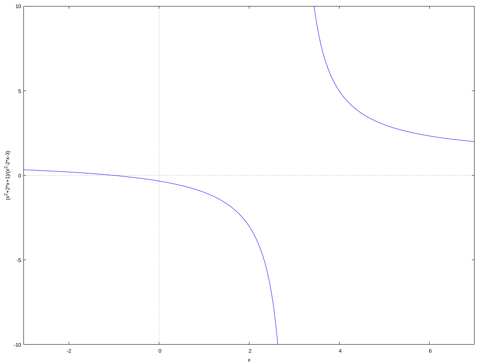
\(f(x) = \frac{x^{2} + 2 x + 1}{x^{2} - 2 x - 3}\)#
From the graph it appears that,
and hence there is a vertical asymptote at \(x = 3\). It also appears that there are no other vertical asymptotes, and there are not. It is easy to see that the denominator \(x^{2} - 2 x - 3 = \left(x - 3\right) \left(x + 1\right)\) and hence is zero at \(x = 3\) and \(x = -1\) but there is no vertical asymptote at \(x = -1\).
Although we can factor this denominator in our heads, if we could not here is how you can use Maxima to do so. Run the command factor(denom(f(x))) and the result will be \(\left(x - 3\right) \left(x + 1\right)\).
The reason that \(x = -1\) is not an asymptote is because there is no infinite limit at \(x = -1\), which is caused by the numerator also having \(x = -1\) as a root. If we select the original expression and then Algebra > Simplify, we get,
which does not have a root of \(x = -1\) in the denominator.
Note
The original function
and its simplification
are not equal. For two functions to be equal they must be equal at all values of the variable. These two are except at \(x = -1\) since \(g(-1) = 0\) and \(f(-1)\) is undefined. In reality there is a hole in the graph of \(f(x)\) at \(x = -1\), like,
\(f(x) = \frac{x^{2} + 2 x + 1}{x^{2} - 2 x - 3}\)#